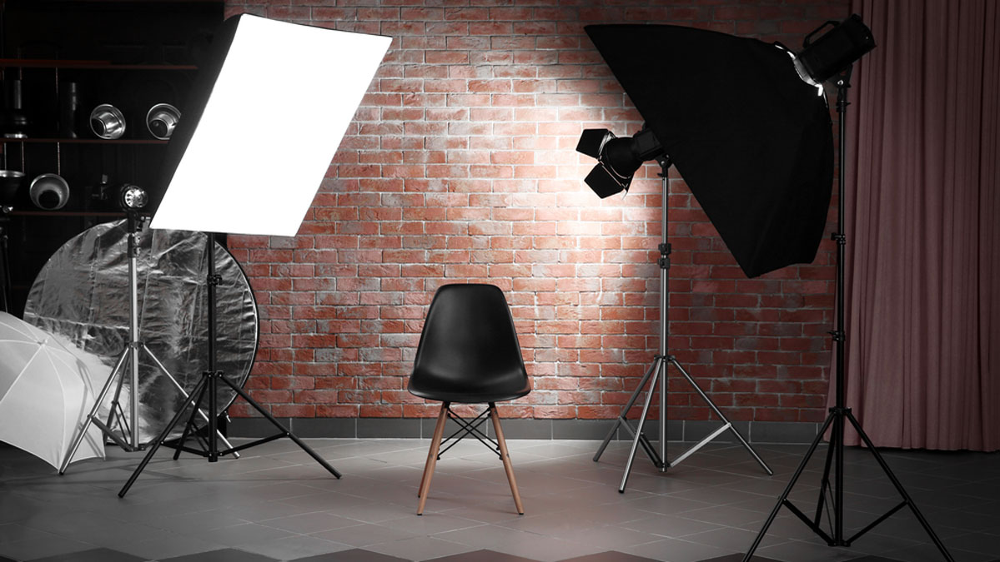

Lights
You’ll need a backlight, a key light, and a fill light:
Backlights: The backlight gives a pleasing depth to the shot and separates your subject from the background. It should be placed behind the subject and should provide light on the head and shoulders.
The key light is exactly that, the main light. It should provide the dominant lighting for the subject.
The Fill Light is a supporting light for the key light. It’s usually mirrors the key light at a lower intensity and “fills in” the shadows created by the key light.
Key Lights: These are the main lights used to film the subject of the video.
